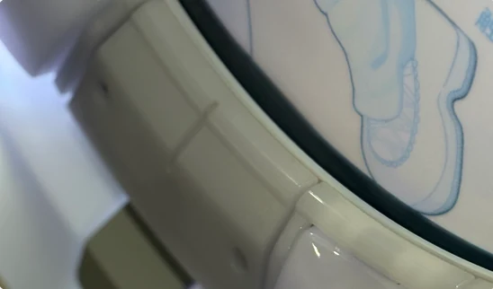
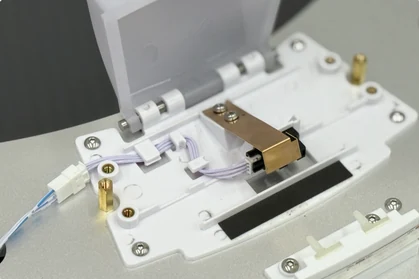
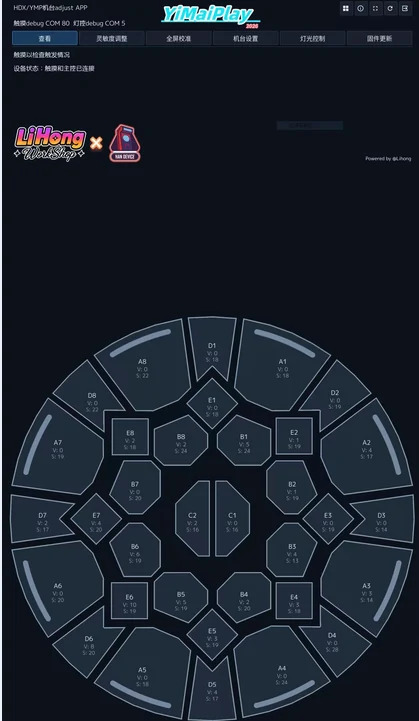

滑过磨砂玻璃
34 分区 ITO 玻璃触摸面板经过电镀蚀刻与磨砂处理，指尖滑动时保持顺滑。
高亮度 COB 灯带围绕按键铺开。打开 YiMaiPlay APP 调节色温，让奶白色机身融入房间的光线。

34 分区 ITO 玻璃触摸面板经过电镀蚀刻与磨砂处理，指尖滑动时保持顺滑。

金属板与韧性塑料共同支撑触摸模组，圆润的边缘与面板贴合。

PC 注塑按键搭配铍铜合金弹片，底部的 Poron 泡棉为每次按压提供缓冲。
在 Windows 上连接控制器，无需额外安装驱动。用适配竖屏的 APP 切换输入模式、调整延迟和灯光。

含桌整体尺寸
90 × 60 × 185 cm长 × 宽 × 高

控制器与配套桌子分箱发出。主箱含控制器、支架及连接件、内六角工具、遥控器、数据线和电源适配器。带显示器的型号另附 HDMI 线。
请自备运行游戏的电脑。数据线建议直连主板 USB 接口，电源接入带地线的插排。选购无显示器版本前，请确认显示器型号和厚度，以便适配背板。
显示器、主控电路板、触摸模组及物理按键均提供 12 个月质保。器件损坏后，请联系店主确认并安排寄送维修零件。